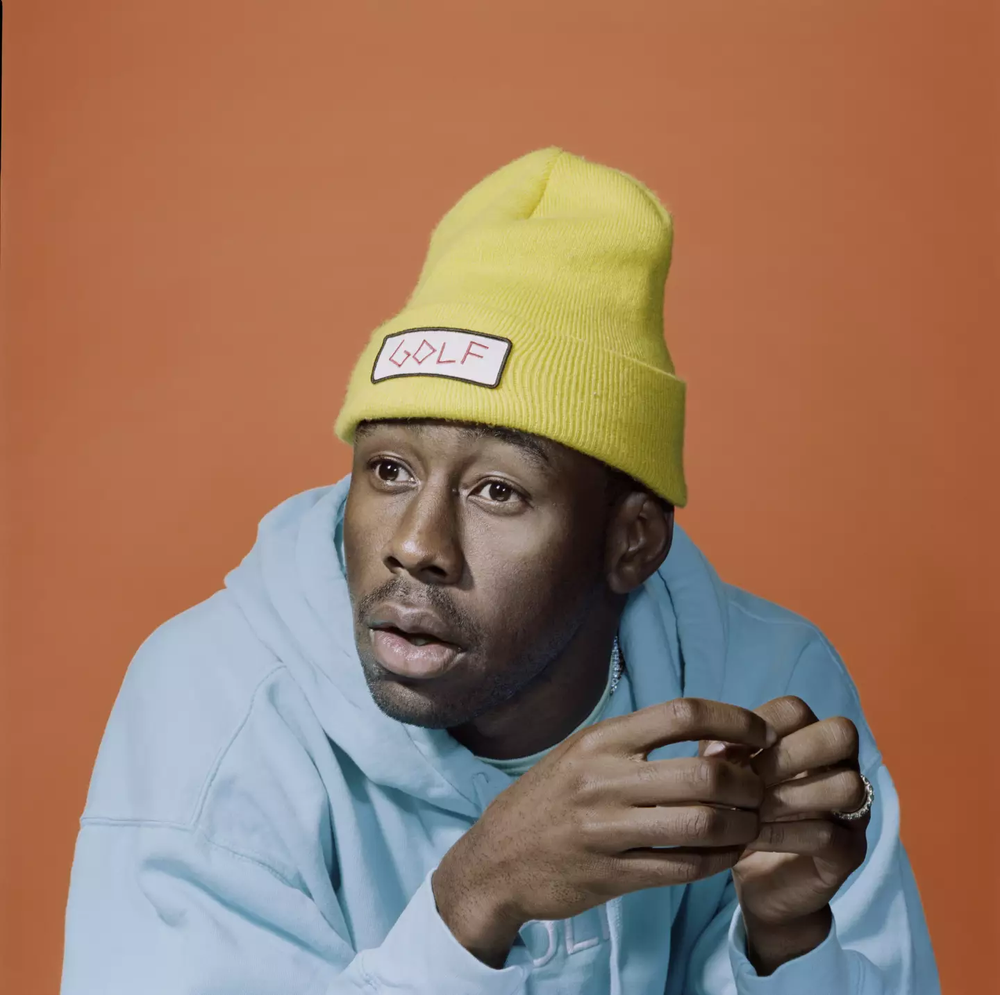

| Curriculum |

Diego Alvear
Resumen:
Soy un apasionado de los videojuegos, tanto de jugarlos como de crearlos. Me encuentro inmerso en el diseño de videojuegos, donde mi enfoque está en dar rienda suelta a mi creatividad para crear mundos y experiencias únicas. Me encanta explorar nuevas mecánicas y tratar de ofrecer algo que no solo entretenga, sino que también conecte con las emociones de quienes los juegan. Además, la música es una parte esencial de mi vida, siempre la tengo como compañera mientras trabajo o disfruto de mis ratos libres, ayudándome a mantenerme inspirado. Mi camino está definido por una constante búsqueda de innovación y superación dentro del mundo del diseño de videojuegos.
Datos personales
- Nombre:Diego Alvear Guerra
- Lugar de nacimiento: Viña del mar
- Fecha de nacimiento: 2 de Agosto del 2005
formacion
Mi formación comenzó en un jardín infantil llamado "Remolinos" en Concón, donde pasé mis primeros años, hasta los 4. Luego, continué mi educación en el colegio Santa María Goretti, donde estuve hasta el 2023. Durante 2024, decidí dar un paso más en mi formación técnica y estudié en el Instituto Arcos, donde me sumergí en el mundo del diseño y la creación. Actualmente, estoy cursando estudios en la Pontificia Universidad Católica de Valparaíso (PUCV), donde sigo profundizando mis conocimientos en áreas clave para mi futuro profesional, especialmente en diseño de videojuegos. Mi enfoque se encuentra en combinar mi pasión por los juegos con una sólida formación académica, buscando siempre nuevas formas de innovar y aportar al mundo digital.
Premiosy reconocimientos
He recibido varias medallas de 3° y 1°lugar de futbol en los años del 2015 a 2018 ademas fui nombrado como mejor compañero en el ultimo año de la enseñanza de basica y el mas responsable en el ultimo año de media
|